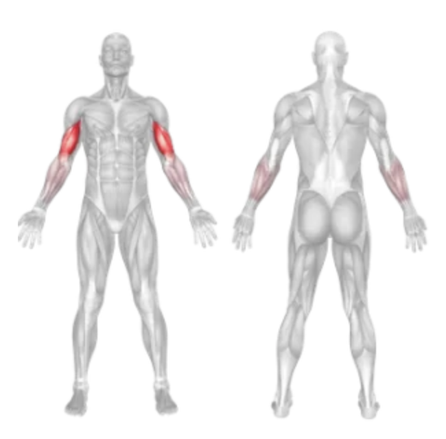
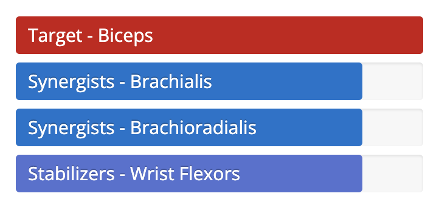

Setup
- Attach a single handle to the low pulley on a cable machine.
- Stand side-on to the machine with your feet shoulder-width apart.
- Grab the handle with one hand using an underhand grip (palm facing up).
- Step slightly away to create tension in the cable with your arm fully extended.
- Keep your elbow close to your torso and your back straight.
Execution
- Curl: Slowly curl the handle toward your shoulder by contracting your biceps.
- Squeeze: Hold the contraction at the top for a second and squeeze the bicep.
- Lower: Lower the handle back to the starting position in a controlled motion.
- Repeat for the desired number of reps before switching arms.
Tips for Effectiveness
- Isolate the Bicep: Avoid swinging or using shoulder movement.
- Steady Core: Keep your core engaged to maintain balance and form.
- Full Range: Extend and curl through the full range of motion for best results.
Benefits of Single Arm Cable Curl
- Unilateral Training: Focuses on one arm at a time to correct muscle imbalances.
- Constant Tension: Cable provides resistance through the entire movement.
- Improved Definition: Excellent for isolating and defining the biceps peak.
Muscles Worked in Single Arm Cable Curl

